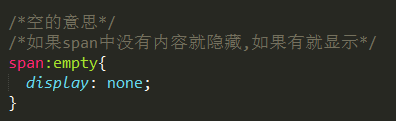

一、边框
1、border-radius 边框圆角设置
一个角有两个半径 一个是水平的一个是垂直的
border-radius(参数1,参数2,参数3,参数4); 分别对应左上角 右上角 右下角 左下角 若只有一个值则四个参数都取相同的值
2、box-shadow 边框(盒子)阴影
box-shadow(参数1,参数2,参数3,参数4); 参数1为相对于盒子X轴的位移 参数2是相对于Y轴 可以为负 参数3为阴影的模糊程度(n+“px”) 参数4为阴影颜色
3、border-image 边框图片
border-image-source 图片路径
border-image-slice
图片边框向内偏移（裁剪图片）
border-image-width
图片边框的宽度 设置该属性可以改变图片边框的大小而不会影响元素的大小不会影响布局
border-image-outset
边框图像区域超出边框的量
border-image-repeat
图像边框是否平铺
|
|
二、CSS3背景
1、background-image
background-image
设置背景图片 不同的背景图像地址用逗号隔开
|
|
2、background-size
background-size: 参数1 参数2;
指定背景图片的大小 可以指定像素或者百分比 百分比是相对于父元素大小的百分比 参数1 定义图像宽度 参数2 定义图像高度
auto
cover
contain
|
|
3、background-origin
background-origin:; 指定了背景图像的位置
border-box
background-origin:border-box; 背景图像从边框区域左上角开始显示

padding-box
background-origin:padding-box; 背景图片从padding区域左上角开始显示

content-box
background-origin:content-box; 从内容区域左上角显示图片

4、background-clip
background-clip 背景向外裁剪的区域
|
|


三、gradients渐变
linear-gradient
linear-gradient(参数1,参数2,参数3); 使用线性渐变创建背景图像 参数1是渐变的方向 参数2是渐变的起始颜色 参数3是渐变的结束颜色 至少三个参数 可以设置多个 渐变的颜色后面加上百分比
|
|
参数1 可以设置方位名词如:linear-gradient:( to right,yellow,green; )意为从左到右黄色到绿色的渐变(向上 下 左 右 对角方向)
也可以用角度指定渐变的方向 0deg会创建一个从下到上的渐变 90deg会创建一个从左到右的渐变
|
|
transparency
渐变也支持透明度 使用rgba()定义颜色结点
|
|
repeat-linear-gradient
background:repeat-linear-gradient;重复的线性渐变 
|
|
radial-gradient
radial-gradient: (参数1,参数2,参数3); 径向渐变:从里到外扩散(圆) 参数1是半径和位置 位置用 “at”+方位名词或者具体位置 参数2是从最里面开始要渐变的颜色 参数3是渐变结束的颜色 也可以有多个参数 渐变的颜色后面加上百分比 用逗号隔开 默认情况下 渐变的中心是center(中心点) 渐变的形状是ellipse(椭圆) 渐变的大小是farthest-corner(表示到最远的角落)
|
|
不同尺寸(半径)大小关键字的使用

|
|
repeat-radial-gradient
重复的径向渐变
四、CSS3选择器
css3新增了许多灵活查找元素的方法, CSS3选择器与jQuery中的绝大部分选择器兼容
1、属性选择器
属性：通过属性来选择元素，具有以下形式
element[attr]———————-(CSS2)存在[attr]属性即可;
element[attr=”val”]——————(CSS2)属性值完全等于val;
element[attr~=”val”]——————–(CSS2)选择属性值为一用空格分隔开的字词列表;
element[attr*=”val”]———————属性值里只要带有val值的;
element[attr^=”val”]———————属性值以val字符开头的;
element[attr$=”val”]———————属性值以val字符结尾的;
element[attr|=”val”]———————选择属性值以val开头并且用连接符“-”分隔的字符串的元素，如果属性值仅为val也将会被选中。
2、伪类选择器
:表示的是伪类选择器的语法格式
element:first-child —————–表示element父级元素中的第一个element元素
element:last-child——————表示element父级元素中的最后一个element元素
element:nth-child(n)—————–element父级元素中的第n个element元素 n可以是数字可以是公式例如(2n,7n+1等)
element:nth-child(even)—————element父级元素中的奇数项element元素
element:nth-child(odd)—————-element父级元素中的偶数项element元素
element:nth-child(-n+3)—————n从0开始到页面承受的范围内(此例表示前三个)
element:nth-last-child(-n+3)———–后三个
element:nth-of-type(n)—————-选择element父元素中具有指定类型的第n个元素
element:nth-last-of-type(n)—————element父元素中具有指定类型的倒数第n个元素
element:first(last)-of-type————–element父元素中具有指定类型的第一个/最后一个元素
element:empty; ——————–选择没有子元素的元素 而且该元素也不含任何文本节点
例：
注：(1)ul>li:nth-child(3)表达的并不是一定选择列表ul中的第三个子元素li 仅有ul中第三个li元素前不存在其他的元素命题才有意义 否则不会改变第三个li的样式
(2) :nth-child(n) 中参数只能是n 不可以用其他字母代替
(3) :nth-child(odd) 选择的是奇数项 而:nth-last-child(odd)选择的是偶数项
目标伪类选择器 :target
element:target; 选择匹配element的所有元素 且元素被相关URL指向时
排除的伪类选择器 element:not(F)
element:not(F) 匹配所有除元素F外的element元素
例：
3、伪对象选择器
element:first-letter / ::first-letter 元素element中第一个字符
element:first-line / ::first-line 元素element中第一行字符
element:selection /::selection 元素element中被鼠标选中的区域
五、文本效果
1、text-shadow
文本阴影 有四个取值 分别是水平偏移距离 垂直偏移距离 模糊的距离 和阴影的颜色
|
|
2、text-overflow
文本溢出显示方式
|
|
3、word-wrap
允许单词内部换行
|
|
五、2D/3D变换
理解2D坐标 Y轴正方向向下 X轴正方向向右
理解3D坐标

1.transform 2D变换
translate
transform: translate(参数1,参数2); 移动(平移) 第一个参数:沿着X轴移动 第二个参数:沿着Y轴移动 发生位移时是相对于对象本身原来的位置移动 不用脱离文档流也可以移动 参数1和参数2都可以设置为百分比 是相对于自身的百分比 如果第二个参数不给值则默认值是0
transform: translateX(); 指定对象X轴(水平方向)的平移
transform: translateY(); 指定对象Y轴(垂直方向)的平移
rotate
transform: rotate(n+”deg”); 设置对象旋转的度数 正值为顺时针旋转 负值为逆时针旋转
scale
transform: scale(); 缩放 第一个参数对应X轴 第二个参数对应Y轴，如果第二个参数未赋值则取第一个参数的值
transform: scaleX(); 指定对象X轴方向的缩放
transform: scaleY();指定对象Y轴方向的缩放
skew
transform: skew(n+”deg”,n+”deg”); 倾斜 参数1:沿X轴倾斜 参数2:沿Y轴倾斜，如果第2个参数未赋值则默认为0 一般只写一个参数
transform: skewX(); 指定对象X轴方向的倾斜角度
transform: skewY(); 指定对象Y轴方向的倾斜角度
martrix
transform: martrix(); 是把所有的2D转换方法组合在一起
martrix(参数1,参数2,参数3,参数4,参数5,参数6); 需要6个参数 包含数学函数 允许:旋转 缩放 移动 以及倾斜
|
|
2、transform 3D变换
上面2D转换的属性3D也相同 下面是与2D不同的或者是2D不具有的
martrix3d
transform: martrix3d(); 使用16个值的4*4矩阵形式制定一个3D变换
translate
transform: translateX(); 沿X轴平移
transform: translateY(); 沿Y轴平移
transform: translateZ(); 沿Z轴平移
transform:translate3d(参数1,参数2,参数3); 参数1沿X轴平移 参数2沿Y轴平移 参数3沿Z轴平移 参数不能省略
rotate
transform: rotateX(); 沿X轴旋转
transform: rotateY(); 沿Y轴旋转
transform: rotateZ(); 沿Z轴旋转
scale
transform: scaleZ(); Z轴的缩放
transform: scale3d(参数1,参数2,参数3); 参数1、2、3分别对应X轴Y轴Z轴 参数不能省略
3、transform-origin (原点)
transform-origin(参数1,参数2) 检索或者设置转换的原点 转换原点不影响translate位移
如果有两个参数值 第一个用于横坐标 第二个用于纵坐标
如果只有一个参数值 该值用于横坐标 纵坐标默认为50%
|
|
4、transform-style (3D呈现方式)
transform-style:指定某元素的子元素是(看起来)在三维空间内还是在该元素所在的2D平面内 需定义在父级元素中
|
|
5、perspective 透视（视距）
指观察者与Z=0平面的距离 取值越大距离越远 反之相同 会产生近大远小的效果 不允许负值 没有perspective就”没有”Z轴 并非任何情况下都需要透视效果
perspective 有两种写法
a、作为一个属性设置给父元素 作用于所有3D转换的子元素
b、作为transform属性的一个值 作用于元素自身

6、backface-visibility
backface-visibility:; 设置元素背面面向用户时是否可见 需要直接在该元素上定义此属性而不能在其父元素上 因为该属性默认不可继承
|
|
六、过渡 Transition
1.transition说明：
复合属性，检索或设置对象变换时的过渡，可以为同一元素的多个属性定义过渡效果，可以缩写可以拆分
2.transition属性详解：
transition-property
transition-property: 需要过渡的属性，如果提供多个属性值，以逗号隔开
|
|
transition-duration
transition-duration: 指定对象过渡的时间，如果提供多个属性值，以逗号隔开;
transition-timing-function
transition-timing-function: 设置过渡的速度(类型)，如果提供多个属性值，以逗号隔开
|
|
transition-delay
transition-delay:延迟过渡的时间，如果提供多个属性值以逗号隔开
3、transitionend
过度结束属性
七、动画 animation
1.首先定义一个动画序列(动画集)
@keyframes 动画名字{
}
简单的动画可以直接使用关键字from{}和to{}，即从一种状态过渡到另一种状态:示例如下
- 12345> @keyframes animate{> from{opacity:1;}> to{opacity:0;}> }>
如果复杂的动画可以使百分比(percentage)方式写，百分比方式是相对动画执行时间的
- 123456789> @keyframes animate{> from{transform:translate(0,0);}> 20%{transform:translate(20,20);}> 40%{transform:translate(40,0);}> 60%{transform:translate(60,20);}> 80%{transform:translate(80,0);}> to{transform:translate(100,20);}> }>
2.animation动画属性详解
animation-name
animation-name: 动画名字,如果有多个名字以逗号分隔；
animation-duration
animation-duration: 动画持续执行的时间，如果有多个属性值以逗号隔开;
animation-timing-function
animation-timing-function: 过渡类型(动画执行速度)，如果多个属性值以逗号隔开；
|
|
animation-delay
animation-delay:动画延迟执行时间，如果提供多个属性值以逗号隔开;
animation-iteration-count
animation-iteration-count:动画执行的循环次数；
|
|
animation-direction
animation-direction:设置动画在循环结束时是否反向运动，如果提供多个属性值以逗号分隔，
|
|
animation-play-state
animation-play-state:动画执行的状态(运动或者暂停),如果提供多个属性值以逗号隔开
|
|
animation-fill-mode
animation-fill-mode:设置动画时间之外(结束时)的状态，如果提供多个属性值以逗号隔开；
|
|
八、多列(兼容不好 了解)
column-count
指定元素的列数
column-width
设置列宽
column-gap
指定列之间的距离
column-rule
设置边线
八、用户界面
appearance
允许使一个元素的外观像一个标准的用户界面元素
box-sizing
方框大小调整
nav-down
指定在何处使用箭头向下导航键时进行导航
nav-index
指定一个元素的tab顺序
nav-left /nav-right/nav-up
指定在何处使用左侧/右侧/向上的箭头导航键进行导航
outline-offset
外轮廓修饰并绘制超出边框的边缘
resize
指定一个元素是否由用户调整大小
八、flex Box伸缩(弹性)盒子
是CSS3的一种新的布局模式 当页面需要适应不同的屏幕大小以及设备类型时确保元素能够适应的布局方式 目的是提供一种更加有效的方式来对一个容器中的子元素进行排列、对齐和分配空白空间
1、弹性盒子内容
由弹性容器(Flex container)和弹性元素(Flex item)组成 弹性容器(父盒子)通过设置display为flex或inline-flex将其定义为弹性盒子 弹性元素默认在弹性盒子内一行显示 默认每个弹性盒子只有一行
display 指定父盒子类型
flex-direction 子元素的排列方向(主轴方向)
justify-content 子元素在主轴上的对齐方式
align-items 子元素在侧轴上的对齐方式
flex-wrap 子元素超出父盒子是否换行
align-content 设置行对齐
flex-flow 简写
order 子元素排列顺序
align-self 在子元素上使用
覆盖容器的align-items属性
flex:子元素分配空间;
2、flex-direction
flex-direction指定弹性容器中子元素的排列方向(主轴方向)
|
|
flex-direction:row;

|
|
flex-direction:row-reverse;

|
|
flex-direction:column;

|
|
flex-direction:column-reverse;

2、justify-content
justify-content 内容主轴对齐方式 应用在弹性容器(父盒子)上 把弹性项沿着弹性容器的主轴线对齐
|
|
flex-start;
flex-end;
center;
space-between;
space-around;

3、align-items
align-items 设置或者检索弹性盒子元素在侧轴的对齐方式
|
|
flex-start;
flex-end;
center;

baseline;
stretch;
4、flex-wrap
指定弹性盒子换行方式
|
|
nowrap
wrap
wrap-reverse

5、align-content
align-content属性用于修改flex-wrap属性的行为 类似于align-items 但它不是设置弹性子元素的对齐 而是设置各行的对齐
|
|
6、弹性子元素属性
排序order
order:数字; 用整数值来定义排列顺序 数值小的排在前面 可以为负值
对齐
设置margin值为auto时 自动获取弹性容器中剩余的空间 所以设置垂直方向margin值为auto 可以使弹性子元素在容器的两轴方向都完全居中
align-self
align-self 用于设置弹性元素自身在侧轴方向上的对齐方式
|
|
flex
用于指定弹性子元素如何分配空间
|
|
js高级总结
对象的动态特性：
1、在JS中 一个对象需要属性 就可以利用对象.属性名 = 值的方式为其添加 只要赋值成功 对象就新增了属性
|
|
2、对象属性的访问形式
点语法：例如
o.name关联数组用法：
o['name']方括号里面必须是字符串 否则会把name当成一个变量来用 下回检查name变量是什么 结果发现name不是变量 就会把它当成 o [null] 来对待例如：
1234console.log(o[name]); // => undefined//如果定义一个变量 agevar age = 'name';console.log(o[age]) // => kobe
(什么叫数组？ 有length属性的就叫数组)
3、曾经使用关联数组的地方
12345function mix(obj1,obj2){for(var key in obj2){obj1[key] = obj2[key]}}4、凡是需要给对象动态添加成员的时候 必须使用关联数组语法
1234567891011var o = {name : 'kobe',sayHello : function(){console.log('你好,我叫'+this.name)}}//使用关联数组的语法访问其name属性 调用其sayHello方法//console.log(o.name)console.log(o['name'])//o.sayHello()o['sayHello']()
|
|


值类型和引用类型作为函数参数传递时候的特性
1、作为函数的参数 就是将参数的数据拷贝一份 传递给函数的定义中的参数
|
|
2、值类型作为函数参数传递的特征 函数内与函数外是两个不同的变量 仅仅是值相等而已
3、引用类型作为函数参数传递的特征 函数内与函数外是两个不同的变量 但是指向同一个对象
因此在函数内部允许修改函数外部的对象的数据
12345678910111213141516171819var o = {name:'kobe',age:'19',gender:'男'}o.copy = function(o){//将this中的所有成员赋值给o//不能写 o = {} 如果在函数内部给他赋值 那他和p1一点关系都没有 如果对他的成员做操作 那么它的成员会保留下来for(var k in this){o[k] = this[k];}}//var p1;//o.copy(p1)//此时运行出来报错如下图 不能设置undefined的 name 属性 因为此时声明了p1 但是没有赋值 所以o.copy(p1) === o.copy(undefined)var p1 = {};o.copy(p1)//此时p1 和 o 指向同一个对象 for-in循环中对属性做的操作相当于对同一个对象做的操作